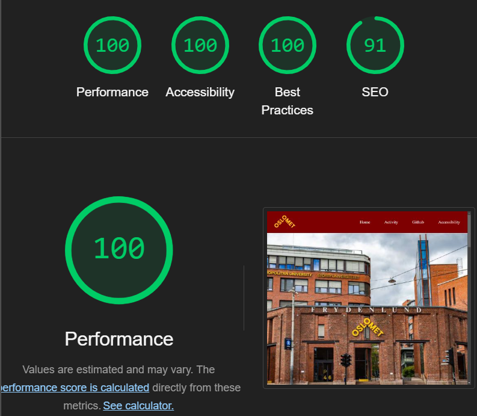
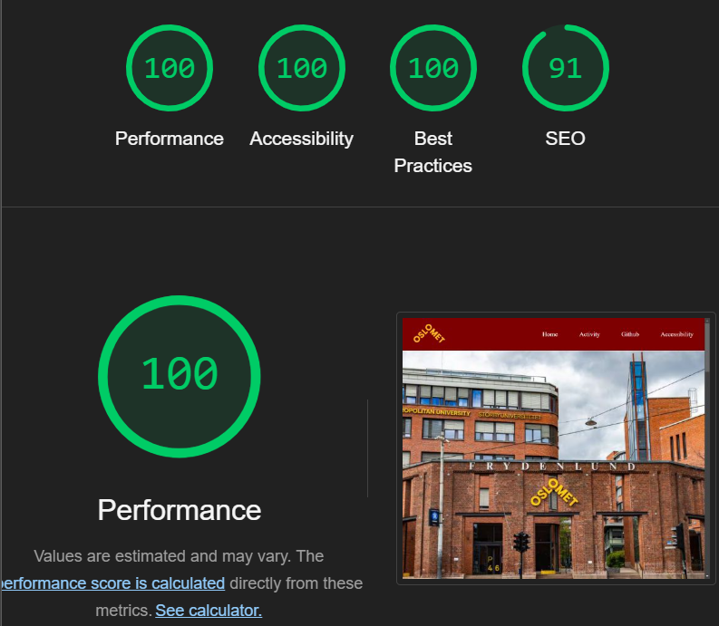

Accessibility

Website accessibility ensures that everyone can use a site easily, regardless of their devices, internet speed, or individual needs. It focuses on creating clear layouts, simple navigation, and adaptable designs that work across different screen sizes and technologies. An accessible website is easy to read, quick to load, and intuitive for all users. By prioritizing accessibility, businesses create a more inclusive and enjoyable experience, ensuring that every visitor can access information and services without unnecessary challenges. This approach not only improves usability but also benefits a wider audience.
Planning Phase
In the beginning of our journey, we decided to draw some sketches of how we would like our website to look like.
We made some clear points we needed to follow to make our website as accessible as possible.
We also made multiple sketches and disregarded ideas that we felt did not look aesthetically pleasing, or fit the criteria.
As you can see on the pictures abow.
On the other hand, we didnt neccesserily make a sketch for the basketball activity layout however it was discussed oral.
We also changed our activity page from "Study abroad page” (second photo) where it would match our home page. However now "to a basketball page" to meet the requirements of our exam.
Our home site header and image looks similar to what we have now although we changed the picture to make it look more appealing to our color combination.
The Lighthouse Test
 

To test our website, we used the Lighthouse Test continuously for each page.
At first, it told us that our image elements do not have explicit width and height, so we tried to fix that.
Another thing the test told us was that we have a error where (br) is not allowed as child of element (ul).
This error happend at the index page, so that was another thing we fixed.
We had the same background-color coordinate (#800020) on our buttons' when hovered on,
so to be able to see it clearer we changed it to light yellow (#FFB81C) when hovered on.
This made the site more accessible, along with following a guideline for the headings in the correct order.
To have a correct order we used h1 only for the main headings, by reusing h2 and h3 by using only on the footer.